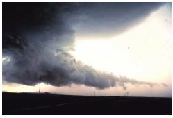

Home Page
F.A.Qs
Statistical Charts
Past Contests
Scheduled Contests
Award Contest
| Online Judge | Problem Set | Authors | Online Contests | User | ||||||
|---|---|---|---|---|---|---|---|---|---|---|
| Web Board Home Page F.A.Qs Statistical Charts | Current Contest Past Contests Scheduled Contests Award Contest | |||||||||
|
Language: WorstWeather Ever
Description "Man, this year has the worst weather ever!", David said as he sat crouched in the small cave where we had sought shelter from yet another sudden rainstorm.
"Nuh-uh!", Diana immediately replied in her traditional know-it-all manner. "Is too!", David countered cunningly. Terrific. Not only were we stuck in this cave, now we would have to listen to those two nagging for at least an hour. It was time to cut this discussion short. "Big nuh-uh. In fact, 93 years ago it had already rained five times as much by this time of year." "Duh", David capitulated, "so it's the worst weather in 93 years then." "Nuh-uh, this is actually the worst weather in 23 years.", Diana again broke in. "Yeah, well, whatever", David sighed, "Who cares anyway?". Well, dear contestants, you care, don't you? Your task is to, given information about the amount of rain during different years in the history of the universe, and a series of statements in the form "Year X had the most rain since year Y", determine whether these are true, might be true, or are false. We say that such a statement is true if:
We say that such a statement might be true if there is an assignment of amounts of rain to years for which there is no information, such that the statement becomes true. We say that the statement is false otherwise. Input The input will consist of several test cases, each consisting of two parts.
The first part begins with an integer 1 <= n <= 50000, indicating the number of different years for which there is information. Next follow n lines. The ith of these contains two integers -109 <= yi <= 109 and 1 <= ri <= 109 indicating that there was ri millilitres of rain during year yi (note that the amount of rain during a year can be any nonnegative integer, the limitation on ri is just a limitation on the input). You may assume that yi < yi+1 for 1 <= i < n. The second part of a test case starts with an integer 1 <= m <= 10000, indicating the number of queries to process. The following m lines each contain two integers -109 <= Y < X <= 109 indicating two years. There is a blank line between test cases. The input is terminated by a case where n = 0 and m = 0. This case should not be processed. Technical note: Due to the size of the input, the use of cin/cout in C++ might be too slow in this problem. Use scanf/printf instead. In Java, make sure that both input and output is buffered. Output There should be m lines of output for each test case, corresponding to the m queries. Queries should be answered with "true" if the statement is true, "maybe" if the statement might be true, and "false" if the statement is false.
Separate the output of two different test cases by a blank line. Sample Input 4 2002 4920 2003 5901 2004 2832 2005 3890 2 2002 2005 2003 2005 3 1985 5782 1995 3048 2005 4890 2 1985 2005 2005 2015 0 0 Sample Output false true maybe maybe Source |
[Submit] [Go Back] [Status] [Discuss]
All Rights Reserved 2003-2013 Ying Fuchen,Xu Pengcheng,Xie Di
Any problem, Please Contact Administrator